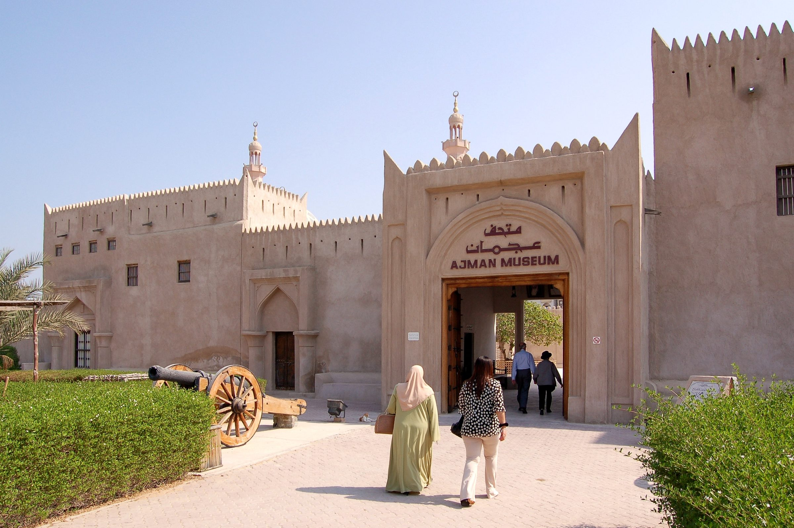

About Caravan Quest
An eco-art scavenger hunt across the Emirates.
Camel sculptures that connect art, culture and nature, and invite families to explore landscapes they would not usually see.


A one-of-a-kind adventure to discover hidden camel sculptures, untold stories and extraordinary places beyond the tourist trail.
Artist's impression
About Caravan Quest
Camel sculptures that connect art, culture and nature, and invite families to explore landscapes they would not usually see.
The camels
Each one marks a heritage or nature site beyond the city centres, and is designed to sit lightly on the land with no concrete foundation.
The hunt
Finding a camel scores points. Answering a question about the place scores more.
How the hunt works →The Originals, The Secretive and The Digital Ones.
From Abu Dhabi to Fujairah, one connected route.
For year one. Launch phase: none are installed yet.
The Hunt
Wafi was helping his dad look after the camels while his dad went on a journey. In the night, Wafi was fast asleep and did not hear the camels run off.
Now it is up to you to find them before his father comes home.
Physical sculptures you can find on site. Some take a bit more searching.
Built into something else, or an optical illusion that only appears from the right spot. Some can only be seen in AR.
Purely digital. You find them in AR.
Finding a hidden camel scores points. Answer a question about the place correctly and you earn more. Points reward time spent in nature and what you learn about the culture and heritage around you.
Each camel is a large handmade wooden sculpture made from recycled materials. They are meant to be installed with a "Leave No Trace" helical anchoring system, set directly into soil, sand or gravel with no concrete foundation.


Ajman Museum · Photo: Bahnfrend · CC BY-SA 4.0The Route · Seven Emirates · Candidate sites
Heritage precincts, oasis walkways and mangrove promenades.
A heritage waterfront in the city, and mountain outdoors beyond it.
Culture first: heritage areas and museum-adjacent public spaces.
Coastline and heritage-linked public spaces with family footfall.
Mangroves, lagoons and coastal nature with guided access.
Mountain viewpoints and cultural zones with outdoor access.
Forts and heritage corridors, a coastal promenade, and wadi trailheads.
Stories
Stories, artist profiles and news will appear here as the project grows. Follow @thecaravanquest for updates.
The caravan is getting ready
Be first to hear when the camels arrive.
Thank you. The caravan will find you soon.